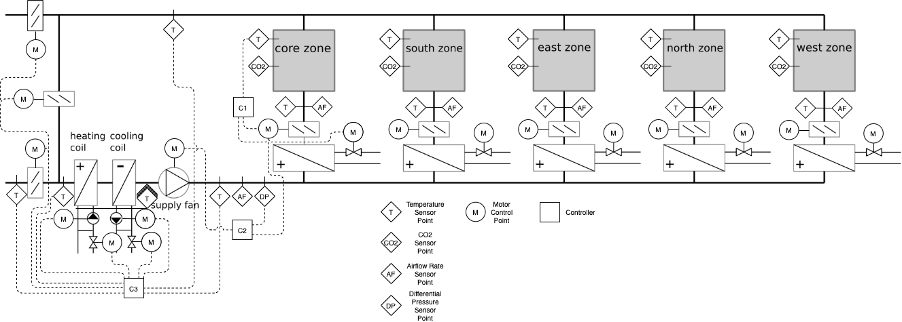

This is the multi zone office air simple emulator model
of BOPTEST. It is based on the Modelica model
Buildings.Examples.VAVReheat.ASHRAE2006.
with the addition of CO2 concentration tracking and BOPTEST signal exchange blocks.
The test case represents one floor with five zones of the new construction medium office building for Chicago, IL, as described in the set of DOE Commercial Building Benchmarks (Deru et al, 2009). There are four perimeter zones and one core zone, with each perimeter zone having a window-to-wall ratio of 0.33. The height of each zone is 2.74 m and the areas are as follows:
Deru M., K. Field, D. Studer, K. Benne, B. Griffith, P. Torcellini, M. Halverson, D. Winiarski, B. Liu, M. Rosenberg, J. Huang, M. Yazdanian, and D. Crawley. DOE commercial building research benchmarks for commercial buildings. Technical report, U.S. Department of Energy, Energy Efficiency and Renewable Energy, Office of Building Technologies, Washington, DC, 2009.
The envelope thermal properties meet ASHRAE Standard 90.1-2004.
The design occupancy density is 0.05 people/m^2. The number of occupants present in each zone at any time coincides with the internal gain schedule defined in the next section. The occupied time for the HVAC system is between 6 AM and 7 PM each day. The unoccupied time is outside of this period.
The design internal gains including lighting, plug loads, and people are combined 20 W/m^2 with a radiant-convective-latent split of 40%-40%-20%. The internal gains are activated according to the schedule in the figure below.
The weather data is from TMY3 for Chicago O'Hare International Airport.
The HVAC system is a multi-zone single-duct Variable Air Volume (VAV) system with pressure-independent terminal boxes with reheat. A schematic of the system is shown in the figure below. The cooling and heating coils are water-based. Only the air distribution system is included, while the central plant is ideally modeled using water sources with prescribed temperatures and constant plant equipment efficiencies. The available sensor and control points, marked on the figure below and described in more detail in the Section Model IO's, are those specified as required by ASHRAE Guideline 36 2018 Section 4 List of Hardwired Points, specifically Table 4.2 VAV Terminal Unit with Reheat and Table 4.6 Multiplie-Zone VAV Air Handling Unit, as well as many that are specified as application specific or optional.

The terminal box dampers have exponential opening characteristics with design airflow rates defined in the table below. The design system airflow rate includes a 0.7 load diversity factor and is defined in the table below. The minimum outside airflow for each zone is calculated using outside airflow rates of 0.3e-3 m^3/s-m^2 and 2.5e-3 m^3/s-person. The limiting zone air distribution effectiveness is 0.8 and the occupant diversity ratio is 0.7. This leads to the minimum outside airflow rates for each zone and system defined in the table below.
Table 1: Zone and System Specifications Summary
| Name | Design Airflow [m^3/s] | Min OA Airflow [m^3/s] |
|---|---|---|
| North | 0.947948667 | 0.1102769 |
| South | 0.947948667 | 0.1102769 |
| East | 0.9001996 | 0.0698148 |
| west | 0.700155244 | 0.0698148 |
| Core | 4.4966688 | 0.5231070 |
| System | 5.595044684 | 0.8590431 |
The supply fan hydraulic efficiency is constant at 0.7 and the motor efficiency is constant at 0.7. The cooling coil is served by a heat pump with constant COP of 3.2 and the heating coils are served by a heat pump with constant COP of 4.0.
The baseline control emulates a typical scheme seen in practice and is based on
the ASHRAE VAV 2A2-21232 of the Sequences of Operation for Common HVAC Systems 2006
as well as that which is implemented as baseline control in the Modelica Buildings
Library model
Buildings.Examples.VAVReheat.ASHRAE2006.
Setpoints and equipment enable/disable are determined by a schedule-based supervisory control
scheme that defines a set of operating modes. This scheme is summarized in
Table 2 below.
Table 2: HVAC Operating Mode Summary
| Name | Condition | TZonHeaSet [degC] | TZonCooSet [degC] | Fan [degC] | TSupSet [degC] | Economizer | Min OA Flow |
|---|---|---|---|---|---|---|---|
| Occupied | In occupied period | 20 | 24 | Enabled | 12 | Enabled | Ventilation |
| Unoccupied off | In unoccupied period, all TZon within setback deadband | 12 | 30 | Disabled | 12 | Disabled | Zero |
| Unoccupied, night setback | In unoccupied period, minimum TZon below unoccupied TZonHeaSet | 12 | 30 | Enabled | 35 | Disabled | Zero |
| Unoccupied, warm-up | In unoccupied period, within 30 minutes of occupied period, average TZon below occupied TZonHeaSet | 20 | 30 | Enabled | 35 | Disabled | Zero |
| Unoccupied, pre-cool | In unoccupied period, within 30 minutes of occupied period, outside TDryBul below limit of 13 degC, average TZon above occupied TZonCooSet | 12 | 24 | Enabled | 12 | Enabled | Zero |
Once the operating mode is determined, a number of low-level, local-loop controllers are used to maintain the desired setpoints using the available actuators. The primary local-loop controllers are specified on the diagram above as C1 to C3.
C1 is responsible for maintaining the zone temperature setpoints as determined by the operating mode of the system and implements dual-maximum logic, as shown in the Figure below. It takes as inputs the zone temperature heating and cooling setpoints and zone temperature measurement, and outputs the desired airflow rate of the damper and position of the reheat valve. Seperate PI controllers are used for control of the damper airflow for cooling and reheat valve position for heating. If the zone requires heating, the desired airflow rate of the damper is mapped to the specified maximum value for heating.
C2 is responsible for maintaining the duct static pressure setpoint and implements a duct static pressure reset strategy. The first step of the controller takes as input all of the terminal box damper positions and outputs a duct static pressure setpoint using a PI controller such that the maximum damper position is maintained at 0.9. The second step then maintains this setpoint using a PI controller and measured duct static pressure as input to output a fan speed setpoint.
C3 is responsible for maintaining the supply air temperature setpoint as well as the minimum outside air flow rate as determined by the operating mode of the system. It takes as inputs the supply air temperature setpoint, supply air temperature measurement, outside airflow rate setpoint, outside airflow rate measurement, and outside drybulb temperature measurement. The first part of the controller uses a PI controller for supply air temperature setpoint tracking to output a signal that is then mapped to position setpoints for the heating coil valve, cooling coil valve, and outside air damper position. The second part of the controller uses a PI controller for outside airflow setpoint tracking to output a second signal for outside air damper position. The maximum of the two outside air damper position signals is finally output to ensure at least enough enough airflow is delivered for ventilation when needed. The economizer is enabled only if the outside drybulb temperature is lower than the return air temperature.
Also present, but not depicted in the diagrams above, is a freeze stat controller. This controller detects potentially freezing conditions by measuring the mixed air temperature and determining if it is less than a limit, 3 degC. If true, the controller will enable C3 to track the supply air temperature setpoint. In this case, the heating coil will be activated to do so.
oveAhu_TSupSet_u [K] [min=285.15, max=313.15]: Supply air temperature setpoint for AHU
oveAhu_dpSet_u [Pa] [min=50.0, max=410.0]: Supply duct pressure setpoint for AHU
oveAhu_yCoo_u [1] [min=0.0, max=1.0]: Cooling coil control signal for AHU
oveAhu_yFan_u [1] [min=0.0, max=1.0]: Supply fan speed setpoint for AHU
oveAhu_yHea_u [1] [min=0.0, max=1.0]: Heating coil control signal for AHU
oveAhu_yOA_u [1] [min=0.0, max=1.0]: Outside air damper position setpoint for AHU
oveAhu_yRet_u [1] [min=0.0, max=1.0]: Return air damper position setpoint for AHU
oveCor_TZonCooSet_u [K] [min=285.15, max=313.15]: Zone air temperature cooling setpoint for zone Core
oveCor_TZonHeaSet_u [K] [min=285.15, max=313.15]: Zone air temperature heating setpoint for zone Core
oveCor_yDam_u [1] [min=0.0, max=1.0]: Damper position setpoint for zone Core
oveCor_yReaHea_u [1] [min=0.0, max=1.0]: Reheat control signal for zone Core
oveEas_TZonCooSet_u [K] [min=285.15, max=313.15]: Zone air temperature cooling setpoint for zone East
oveEas_TZonHeaSet_u [K] [min=285.15, max=313.15]: Zone air temperature heating setpoint for zone East
oveEas_yDam_u [1] [min=0.0, max=1.0]: Damper position setpoint for zone East
oveEas_yReaHea_u [1] [min=0.0, max=1.0]: Reheat control signal for zone East
oveNor_TZonCooSet_u [K] [min=285.15, max=313.15]: Zone air temperature cooling setpoint for zone North
oveNor_TZonHeaSet_u [K] [min=285.15, max=313.15]: Zone air temperature heating setpoint for zone North
oveNor_yDam_u [1] [min=0.0, max=1.0]: Damper position setpoint for zone North
oveNor_yReaHea_u [1] [min=0.0, max=1.0]: Reheat control signal for zone North
oveSou_TZonCooSet_u [K] [min=285.15, max=313.15]: Zone air temperature cooling setpoint for zone South
oveSou_TZonHeaSet_u [K] [min=285.15, max=313.15]: Zone air temperature heating setpoint for zone South
oveSou_yDam_u [1] [min=0.0, max=1.0]: Damper position setpoint for zone South
oveSou_yReaHea_u [1] [min=0.0, max=1.0]: Reheat control signal for zone South
oveWes_TZonCooSet_u [K] [min=285.15, max=313.15]: Zone air temperature cooling setpoint for zone West
oveWes_TZonHeaSet_u [K] [min=285.15, max=313.15]: Zone air temperature heating setpoint for zone West
oveWes_yDam_u [1] [min=0.0, max=1.0]: Damper position setpoint for zone West
oveWes_yReaHea_u [1] [min=0.0, max=1.0]: Reheat control signal for zone West
reaAhu_PCoo_y [W] [min=None, max=None]: Electrical power measurement of cooling for AHU
reaAhu_PFanSup_y [W] [min=None, max=None]: Electrical power measurement of supply fan for AHU
reaAhu_PHea_y [W] [min=None, max=None]: Electrical power consumption for heating coil for AHU
reaAhu_TMix_y [K] [min=None, max=None]: Mixed air temperature measurement for AHU
reaAhu_TRet_y [K] [min=None, max=None]: Return air temperature measurement for AHU
reaAhu_TSup_y [K] [min=None, max=None]: Supply air temperature measurement for AHU
reaAhu_V_flow_out_y [m3/s] [min=None, max=None]: Outside air flowrate measurement for AHU
reaAhu_V_flow_ret_y [m3/s] [min=None, max=None]: Return air flowrate measurement for AHU
reaAhu_V_flow_sup_y [m3/s] [min=None, max=None]: Supply air flowrate measurement for AHU
reaAhu_dp_sup_y [Pa] [min=None, max=None]: Discharge pressure of supply fan for AHU
reaAhu_yCooAct_y [1] [min=None, max=None]: Cooling coil control signal feedback for AHU
reaAhu_yFanAct_y [1] [min=None, max=None]: Supply fan speed set point feedback for AHU
reaAhu_yHeaAct_y [1] [min=None, max=None]: Heating coil control signal feedback for AHU
reaAhu_yOA_y [1] [min=None, max=None]: Outside air damper position set point feedback for AHU
reaAhu_yRelAct_y [1] [min=None, max=None]: Relief air damper position set point feedback for AHU
reaAhu_yRetAct_y [1] [min=None, max=None]: Return air damper position set point feedback for AHU
reaCor_CO2Zon_y [ppm] [min=None, max=None]: Zone air CO2 measurement for zone Core
reaCor_PHea_y [W] [min=None, max=None]: Electrical power consumption for reheat for zone Core
reaCor_TSup_y [K] [min=None, max=None]: Discharge air temperature to zone measurement for zone Core
reaCor_TZon_y [K] [min=None, max=None]: Zone air temperature measurement for zone Core
reaCor_V_flow_y [m3/s] [min=None, max=None]: Discharge air flowrate to zone measurement for zone Core
reaCor_yDamAct_y [1] [min=None, max=None]: Damper position set point feedback for zone Core
reaCor_yReaHeaAct_y [1] [min=None, max=None]: Reheat control signal set point feedback for zone Core
reaEas_CO2Zon_y [ppm] [min=None, max=None]: Zone air CO2 measurement for zone East
reaEas_PHea_y [W] [min=None, max=None]: Electrical power consumption for reheat for zone East
reaEas_TSup_y [K] [min=None, max=None]: Discharge air temperature to zone measurement for zone East
reaEas_TZon_y [K] [min=None, max=None]: Zone air temperature measurement for zone East
reaEas_V_flow_y [m3/s] [min=None, max=None]: Discharge air flowrate to zone measurement for zone East
reaEas_yDamAct_y [1] [min=None, max=None]: Damper position set point feedback for zone East
reaEas_yReaHeaAct_y [1] [min=None, max=None]: Reheat control signal set point feedback for zone East
reaNor_CO2Zon_y [ppm] [min=None, max=None]: Zone air CO2 measurement for zone North
reaNor_PHea_y [W] [min=None, max=None]: Electrical power consumption for reheat for zone North
reaNor_TSup_y [K] [min=None, max=None]: Discharge air temperature to zone measurement for zone North
reaNor_TZon_y [K] [min=None, max=None]: Zone air temperature measurement for zone North
reaNor_V_flow_y [m3/s] [min=None, max=None]: Discharge air flowrate to zone measurement for zone North
reaNor_yDamAct_y [1] [min=None, max=None]: Damper position set point feedback for zone North
reaNor_yReaHeaAct_y [1] [min=None, max=None]: Reheat control signal set point feedback for zone North
reaSou_CO2Zon_y [ppm] [min=None, max=None]: Zone air CO2 measurement for zone South
reaSou_PHea_y [W] [min=None, max=None]: Electrical power consumption for reheat for zone South
reaSou_TSup_y [K] [min=None, max=None]: Discharge air temperature to zone measurement for zone South
reaSou_TZon_y [K] [min=None, max=None]: Zone air temperature measurement for zone South
reaSou_V_flow_y [m3/s] [min=None, max=None]: Discharge air flowrate to zone measurement for zone South
reaSou_yDamAct_y [1] [min=None, max=None]: Damper position set point feedback for zone South
reaSou_yReaHeaAct_y [1] [min=None, max=None]: Reheat control signal set point feedback for zone South
reaWes_CO2Zon_y [ppm] [min=None, max=None]: Zone air CO2 measurement for zone West
reaWes_PHea_y [W] [min=None, max=None]: Electrical power consumption for reheat for zone West
reaWes_TSup_y [K] [min=None, max=None]: Discharge air temperature to zone measurement for zone West
reaWes_TZon_y [K] [min=None, max=None]: Zone air temperature measurement for zone West
reaWes_V_flow_y [m3/s] [min=None, max=None]: Discharge air flowrate to zone measurement for zone West
reaWes_yDamAct_y [1] [min=None, max=None]: Damper position set point feedback for zone West
reaWes_yReaHeaAct_y [1] [min=None, max=None]: Reheat control signal set point feedback for zone West
weaSta_reaWeaCeiHei_y [m] [min=None, max=None]: Cloud cover ceiling height measurement
weaSta_reaWeaCloTim_y [s] [min=None, max=None]: Day number with units of seconds
weaSta_reaWeaHDifHor_y [W/m2] [min=None, max=None]: Horizontal diffuse solar radiation measurement
weaSta_reaWeaHDirNor_y [W/m2] [min=None, max=None]: Direct normal radiation measurement
weaSta_reaWeaHGloHor_y [W/m2] [min=None, max=None]: Global horizontal solar irradiation measurement
weaSta_reaWeaHHorIR_y [W/m2] [min=None, max=None]: Horizontal infrared irradiation measurement
weaSta_reaWeaLat_y [rad] [min=None, max=None]: Latitude of the location
weaSta_reaWeaLon_y [rad] [min=None, max=None]: Longitude of the location
weaSta_reaWeaNOpa_y [1] [min=None, max=None]: Opaque sky cover measurement
weaSta_reaWeaNTot_y [1] [min=None, max=None]: Sky cover measurement
weaSta_reaWeaPAtm_y [Pa] [min=None, max=None]: Atmospheric pressure measurement
weaSta_reaWeaRelHum_y [1] [min=None, max=None]: Outside relative humidity measurement
weaSta_reaWeaSolAlt_y [rad] [min=None, max=None]: Solar altitude angle measurement
weaSta_reaWeaSolDec_y [rad] [min=None, max=None]: Solar declination angle measurement
weaSta_reaWeaSolHouAng_y [rad] [min=None, max=None]: Solar hour angle measurement
weaSta_reaWeaSolTim_y [s] [min=None, max=None]: Solar time
weaSta_reaWeaSolZen_y [rad] [min=None, max=None]: Solar zenith angle measurement
weaSta_reaWeaTBlaSky_y [K] [min=None, max=None]: Black-body sky temperature measurement
weaSta_reaWeaTDewPoi_y [K] [min=None, max=None]: Dew point temperature measurement
weaSta_reaWeaTDryBul_y [K] [min=None, max=None]: Outside drybulb temperature measurement
weaSta_reaWeaTWetBul_y [K] [min=None, max=None]: Wet bulb temperature measurement
weaSta_reaWeaWinDir_y [rad] [min=None, max=None]: Wind direction measurement
weaSta_reaWeaWinSpe_y [m/s] [min=None, max=None]: Wind speed measurement
Lighting heat gain is included in the internal heat gains and is not controllable.
There is no shading on this building.
There is no onsite generation or storage on this building site.
A moist air model is used. Relative humidity is tracked based on latent heat gain from occupants, outside air relative humidity, and a cooling coil model that includes condensation.
The duct airflow is modeled using a pressure-flow network.
Airflow due to infiltration is calculated based on time-varying
wind pressure coefficients for each facade using
Buildings.Fluid.Sources.Outside_CpLowRise.
CO2 generation is 0.0048 L/s per person (Table 5, Persily and De Jonge 2017) and density of CO2 assumed to be 1.8 kg/m^3, making CO2 generation 8.64e-6 kg/s per person. Outside air CO2 concentration is 400 ppm.
Persily, A. and De Jonge, L. (2017). Carbon dioxide generation rates for building occupants. Indoor Air, 27, 868–879. https://doi.org/10.1111/ina.12383.
Constant electricity prices are based on those from ComEd [1], the utility serving the greater Chicago area. The price is based on the Basic Electricity Service (BES) rate provided to the Watt-Hour customer class for applicable charges per kWh. This calculation is an approximation to obtain a reasonable estimate of price. The charges included are as follows:
The total constant electricity price is $0.094/kWh
Dynamic electricity prices are based on those from ComEd [1], the utility serving the greater Chicago area. The price is based on the Residential Time of Use Pricing Pilot (RTOUPP) rate for applicable charges per kWh. This calculation is an approximation to obtain a reasonable estimate of dynamic price. The charges included are the same as the constant scenario (using BES) except for the following change:
Summer (Jun, Jul, Aug, Sep):
Highly Dynamic electricity prices are based on those from ComEd [1], the utility serving the greater Chicago area. The price is based on the Basic Electric Service Hourly Pricing (BESH) rate for applicable charges per kWh. This calculation is an approximation to obtain a reasonable estimate of highly dynamic price. The charges included are the same as the constant scenario (using BES) except for the following change:
References:
The Electricity Emissions Factor profile is based on the average annual emissions from 2019 for the state of Illinois, USA per the EIA. It is 752 lbs/MWh or 0.341 kgCO2/kWh. For reference, see https://www.eia.gov/electricity/state/illinois/
The Gas Emissions Factor profile is based on the kgCO2 emitted per amount of natural gas burned in terms of energy content. It is 0.18108 kgCO2/kWh (53.07 kgCO2/milBTU). For reference, see https://www.eia.gov/environment/emissions/co2_vol_mass.php.